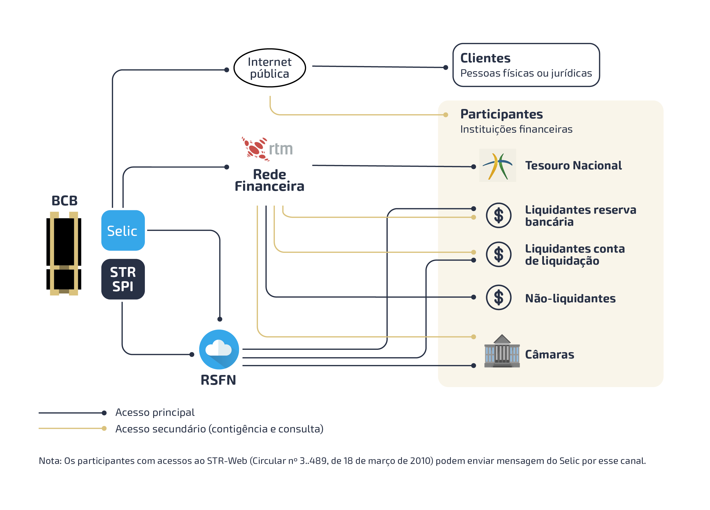
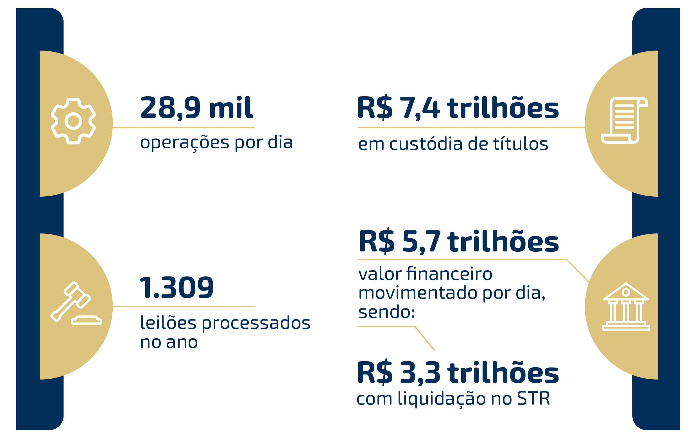

O Selic
Sistema Especial de Liquidação e de Custódia (Selic)
O Selic1 é uma infraestrutura do mercado financeiro brasileiro (IMF), administrada pelo
Banco Central do Brasil (BCB), que se destina à custódia de títulos escriturais de emissão do Tesouro
Nacional (TN), bem como ao registro e à liquidação de operações com esses títulos. As liquidações no
âmbito do Selic ocorrem por meio do mecanismo de entrega contra pagamento (Delivery versus Payment -
DVP), que opera no conceito de Liquidação Bruta em Tempo Real (LBTR), sendo as operações liquidadas uma
a uma por seus valores brutos em tempo real. Como depositária, o Selic enquadra-se nos conceitos de CSD
(Central Securities Depository) e SSS (Securities Settlement System).
A operacionalização dos serviços do Selic e de seus módulos complementares é feita em parceria com a
Associação Brasileira das Entidades dos Mercados Financeiro e de Capitais (Anbima), disciplinada por
convênio de cooperação operacional.
Os principais serviços são os relativos à custódia de títulos e liquidação de suas operações, o
processamento dos leilões (de títulos efetuados pelo TN e, de operações compromissadas e de contratos de
swap cambial conduzidos pelo BCB) e o cálculo diário da taxa Selic.
Figura 1 - Estrutura de operação do Selic

1. Disponível em: https://www.bcb.gov.br/estabilidadefinanceira/sistemaselicSelic em números
Figura 2 – Principais estatísticas do sistema

O número de operações registradas por dia corresponde à média diária do ano de 2021; o valor em custódia corresponde ao valor financeiro de todos os títulos custodiados no último dia útil do ano, avaliados pelo preço de lastro aceito pelo BCB em suas operações compromissadas ou, na ausência deste, pelo valor nominal atualizado; o número de leilões processados no ano agrega os leilões de títulos do TN e os leilões de operações compromissadas e de contratos de swap cambial e efetuados pelo BCB; e o valor financeiro movimentado por dia apresenta a média do valor financeiro diário movimentado por todas as operações em 2021.